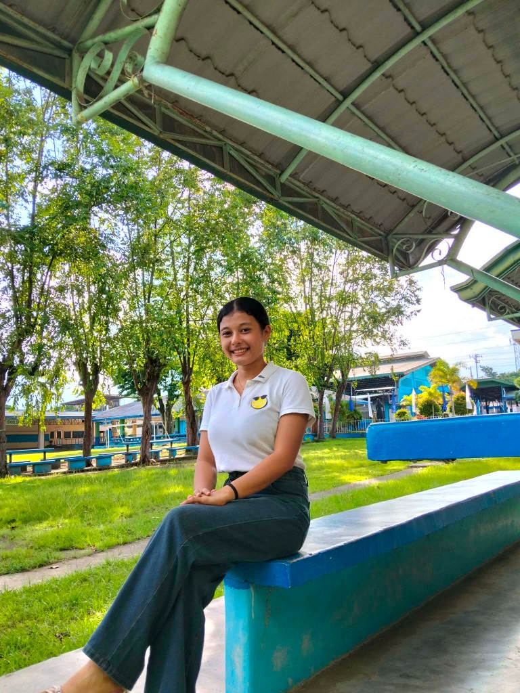
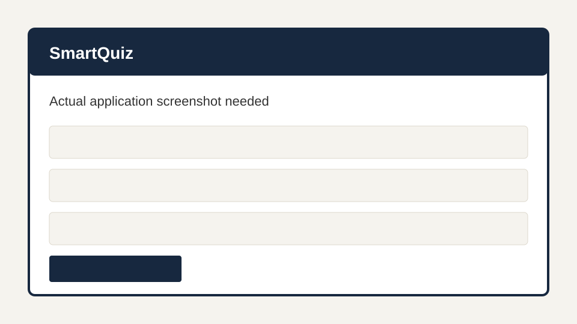
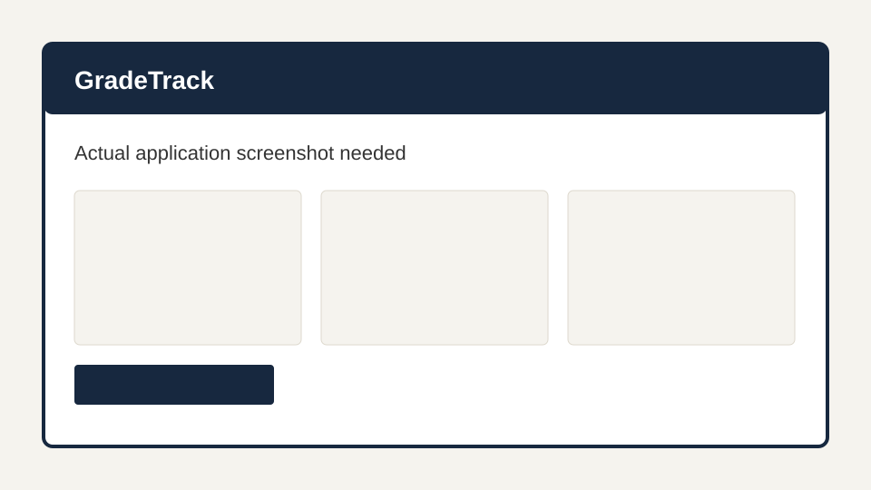

Saint Peter's College of Toril
Bachelor of Science in Information Technology
First Year College · Davao City, Philippines
Student Portfolio
First-Year BSIT Student · Aspiring Web & Software Developer
I build my programming foundation through practical, accessible web projects while learning, experimenting, and improving one skill at a time.
Get to Know Me

I am currently pursuing a Bachelor of Science in Information Technology at Saint Peter's College of Toril. I enjoy learning how technology can solve problems and make everyday tasks easier.
My interests include reading, designing, and watching or exploring video content. I value creativity and am willing to learn new skills, practice consistently, and improve through hands-on projects.
My goal is to develop creative digital solutions while building a strong foundation in web development and software development.
Explore my educationAcademic Background
Saint Peter's College of Toril
First Year College · Davao City, Philippines
What I'm Learning
Semantic structure and accessible page content.
Layouts, visual design, and responsive styling.
Developing interactive and user-friendly features.
Creating clear and visually consistent interfaces.
Adapting layouts for phones, tablets, and desktops.
Using color, typography, and structure thoughtfully.
Selected Work

Screenshot neededStudent Project · JavaScript Application
Purpose: Help learners review introductory IT and computer fundamentals.
Problem: Students need a simple way to practice concepts and see their progress.
Solution: A ten-question quiz with answer selection, progress tracking, scoring, feedback, and restart controls.
What I learned: JavaScript state management, DOM updates, progress indicators, and accessible interactions.
View Live Project
Screenshot neededStudent Project · Web Calculator
Purpose: Demonstrate weighted grading through a configurable student calculator.
Problem: Understanding how scores and category weights contribute to a final percentage can be difficult.
Solution: A validated calculator with editable scores and weights, reset controls, and a clearly labeled sample remark.
What I learned: Form validation, numeric calculations, edge-case handling, and clear result presentation.
View Live ProjectFuture Work
Additional web development and software projects will be added as I continue learning and improving.
My Direction
“My ambition is to become a successful IT professional specializing in web and software development. I aspire to create innovative websites and applications that provide practical solutions to everyday problems.”
I want to continuously improve my programming knowledge, creativity, and problem-solving abilities while exploring new technologies.
Let's Connect
Feel free to send me an email or use the available contact options below.
Send Email